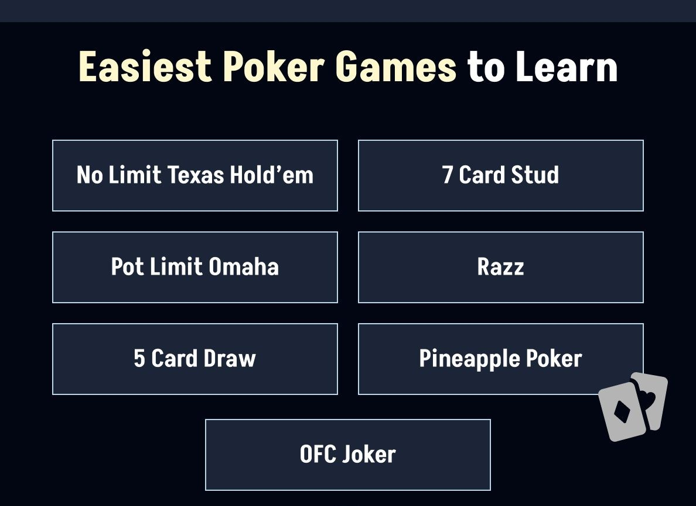

The easiest poker games to learn are Five Card Draw, Three Card Poker, and Texas Hold'em — all use the same hand rankings and can be picked up in a single session. If you want to play immediately with friends online, Pokerrrr 2 supports seven poker beginner formats with no real-money pressure, so you can practice at your own pace. This guide breaks down each game's rules, what makes it easy, and which format to start with depending on your group.
Picking one of the easiest poker games lets you dive right into the fun without the brain strain. In this article, we will introduce some simple poker games. Whether you play poker with or without chips, the right beginner-friendly game will help you quickly understand your hand’s probability and start building real table confidence. Let’s go!
What is an “Easy” Poker Game?
An easy poker game is simple to learn, fast to understand, and fun for someone who’s just starting. It typically has three defining features: a simple betting structure, clear rules, and quick feedback.
First, the flow of betting should be predictable and easy to follow. Fewer betting rounds reduce confusion and make it easier to understand when and how to act. This allows players to focus on their decisions rather than trying to remember complex sequences.
Also, the game should have a straightforward set of rules that can be learned in just a few minutes. Clear hand rankings, an uncomplicated dealing process, and minimal special conditions keep the game accessible to everyone at the table.
Finally, easy poker games give players fast results, helping them understand the outcome of their decisions right away. The shorter the gap between making a move and seeing the result, the faster beginners can learn and improve.
Now, let’s see some popular easy poker game variants.
7 Easiest Poker Games to Learn

No Limit Texas Hold’em
Think of No‑Limit Texas Hold’em as poker’s friendly, fast lane: it’s wildly popular, easy to pick up, and packed with excitement.
In each round, every player gets two private, “hole” cards that only they can see. Five shared cards (the “community cards”) are dealt face-up in stages—the flop (three cards), the turn (one card), then the river (one card). You aim to use your two private cards along with any of the community cards to create the strongest possible five-card hand. Betting starts before the flop, right after everyone gets their hole cards. This is called the “pre-flop” round, even before any shared cards appear.
What makes No-Limit Hold’em extra thrilling is the “No-Limit” part: you can bet any amount, even your entire stack, at any point. The action unfolds round by round, be it pre-flop, flop, turn, or river, giving you a clear, back-and-forth rhythm to follow. The flow is intuitive, the betting structure makes sense, and you get to see how hands develop, flop by flop.
Pot Limit Omaha
Pot-Limit Omaha is like Texas Hold’em’s slightly spicier cousin.
It follows the same community-card structure, but each player receives four hole cards instead of two, and you must use exactly two of them, combining them with three community cards to make your hand. Betting follows a “pot-limit” rule: you can wager no more than the total size of the pot at that moment.
Calculating it can feel like math class, but casinos and online platforms make it effortless (dealers or buttons take care of the numbers). There's even a neat trick called the “multiply by three” shortcut to estimate how big you can bet.
This game is approachable since it mirrors Hold’em’s structure, like flop, turn, river, so you already know the rhythm. The four cards give you more ways to build your best hand, and the pot-limit betting adds a strategic layer without becoming overwhelming once you get it. Plus, with built-in calculators or dealer support, you don’t need to sweat the math.
5 Card Draw
Welcome to poker’s classic, no-frills cruiser: Five-Card Draw is clean, simple, and perfect for playing at home or with friends.
Everyone gets dealt five private cards, unseen by the others. A round of betting follows. If multiple players are still in, you enter the “draw” phase: choose how many cards you want to discard (commonly up to three), receive replacements, and then another betting round happens.
Once that’s wrapped up, any remaining players show their hands, and the highest five-card hand wins. Just as simple as that. No community cards, no confusing reveals, just the cards in your hand. And, with only two betting rounds and no shared cards, new players can focus on learning hand rankings and bluffing basics without the pressure.
7 Card Stud
Seven‑Card Stud is the classic poker variant of Hold’em with no shared cards, just your own.
Each player gets seven cards throughout the hand: some face‑down and some face‑up—and you build your best five‑card hand from those. The deal begins with two down cards (hidden) and one up (visible) per player, followed by a betting round.
Then, in successive “streets” (fourth through seventh), players receive more cards, alternating face‑up and face‑down, each followed by betting rounds. A combination of hidden and exposed cards helps you make decisions: you can quietly observe opponents while building your own strategy. At showdown, the highest hand wins.
The slow pace is perfect for learning, with each betting round introducing only one new card or decision. Seeing some of your opponents’ cards can boost your confidence and teach you how to gauge their strength. No complex community-card strategy to juggle. Just build your hand and act smart.
Razz
Razz is like Seven‑Card Stud shuffled upside-down because here, the lowest five‑card hand wins. Instead of chasing the biggest poker hand, your goal is to collect the smallest one from the seven cards dealt during the round.
Players ante, and then each gets two cards face‑down plus one face‑up (this is known as “third street”). Whoever shows the highest up‑card pays the “bring‑in” (a small obligatory bet), but they can also choose to “complete” it to the full bet.
Following each betting round, players receive more cards, from fourth street to seventh street, with some dealt face up and others face down. Bets are made along the way, usually in a structured fixed‑limit format. Finally, whoever reveals the lowest five‑card hand wins. Straights and flushes don’t count against you, and the ace always counts as low, so the best possible hand is A‑2‑3‑4‑5, fondly known as “the wheel”.
Pineapple Poker
Pineapple Poker feels very much like Hold’em, with a quirky twist that spices things up.
You start with three hole cards. In the classic version, you discard one before the flop, then play the rest just like Texas Hold’em. The betting structure is like Hold’em: post‑blinds, hole cards, discard, then flop, turn, and river. All with standard betting rounds. Players must use two of their remaining cards plus five community cards to build the best possible hand.
There are two variants if you want to add flair:
- Crazy Pineapple: Hold all three cards through the flop betting; discard one after the flop, before the turn.
- Lazy Pineapple (or Tahoe): Keep all three until the showdown—only then do you discard one.
This poker variant keeps all the simplicity of Hold’em’s structure with an added decision point: choosing which card to ditch. That extra choice adds engagement without overwhelming complexity.
OFC Joker
OFC Joker, one of the most approachable poker variants you’ll find, takes the classic Open-Face Chinese format and adds a wild twist. Each player’s mission is to arrange thirteen cards into three poker hands—top (three cards), middle (five cards), and bottom (five cards)—with the bottom hand strongest and the top hand weakest.
The round begins with five cards placed face-up, then continues with four more turns where players draw three cards, keep two, and discard one. Once cards are set, they can’t be moved, making placement choices critical. The Joker card adds spice, acting as a wild card that can become anything you need. This not only boosts your chances of completing big hands but also increases the odds of hitting Fantasyland, a bonus round where you’re dealt all thirteen cards at once.
Instead of betting rounds, players score by comparing each row head-to-head, with extra points for strong hands and bonuses. Easy to learn yet full of strategy, OFC Joker feels more like a clever puzzle than a betting battle.
Enjoy Easy Poker Games to Play at Home Now with Pokerrrr 2
From classic draw games to quirky community-card twists, these simple variants we’ve covered prove that poker doesn’t have to be complicated to be fun.For a twist on regular poker, try double board — two community boards running at once, splitting the pot between two winners. Once you’ve learned the rules, understood the flow, and tried your hand at different styles, the next step is finding a way to put that knowledge into practice.
With Pokerrrr 2, you can host private games, create your own Poker Club, and enjoy smooth, real-time action in Texas Hold’em, Omaha, Short Deck Poker, Blackjack, Sit & Go and other easy poker games—all in one place. Whether you’re looking for a poker app for beginners or you want to practice learning strategies for poker tournaments, Pokerrrr 2 gives you a friendly, flexible space to sharpen your skills. You can chat in-game, track hand histories, and revisit the best starting hands you’ve learned to recognize, all while experiencing the social buzz of poker night from anywhere.
It’s the perfect way to go from learner to confident player—without the pressure. So grab your seat, invite your crew, and let the cards fly. Download Pokerrrr 2 now and turn everything you’ve just learned into exciting, real-time action.